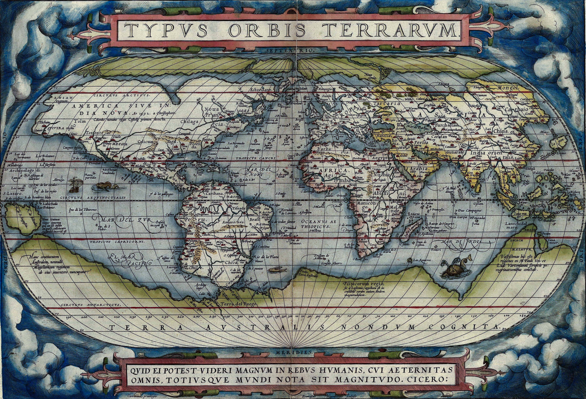
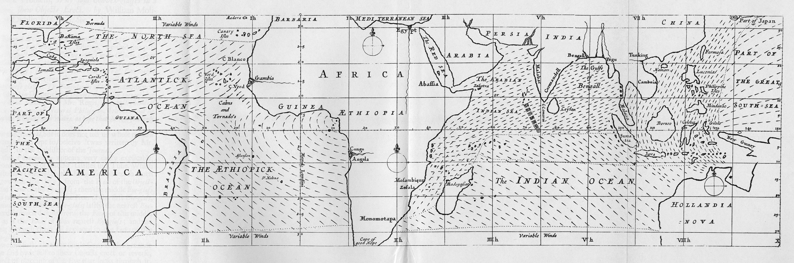
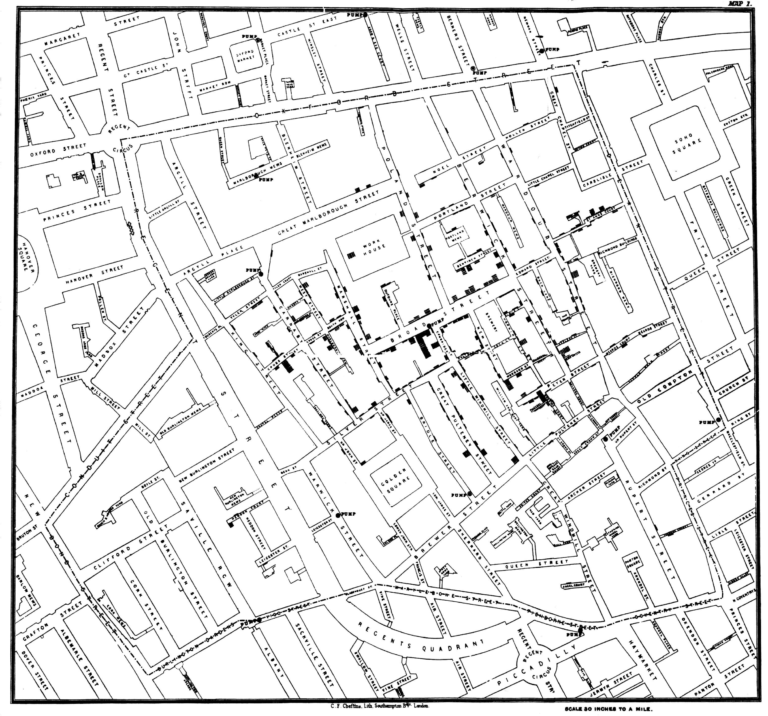
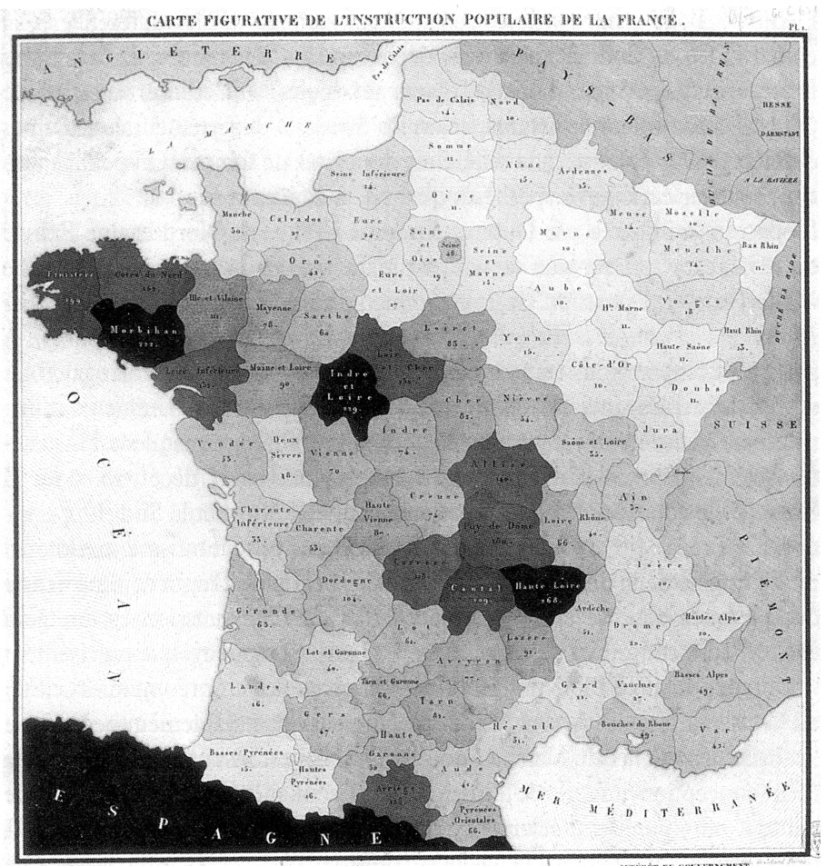
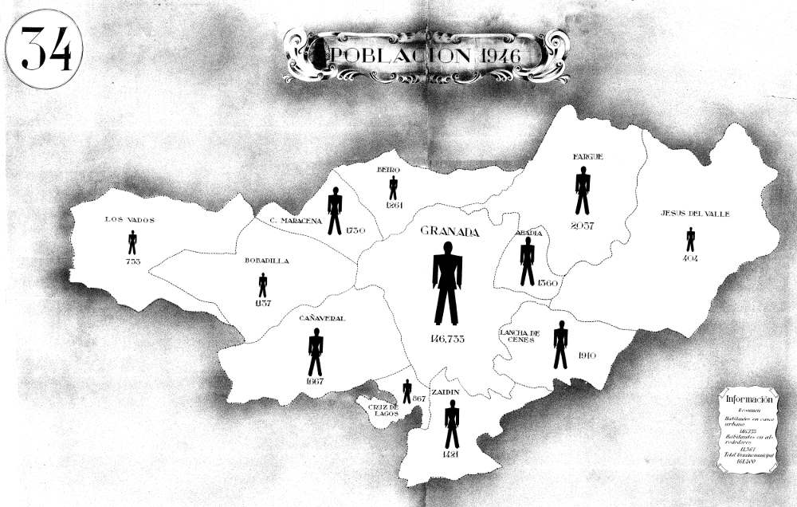

Orígenes de la cartografía temática (siglos XVI-XVII)
Renacimiento y la Revolución Científica:
- Durante el Renacimiento, los avances en matemáticas, astronomía y geografía, junto con la invención de la imprenta, permitieron un auge en la creación de mapas detallados. Aunque la mayoría de los mapas eran generales, comenzaron a surgir ejemplos tempranos de mapas que incluían información específica, como rutas comerciales, corrientes oceánicas y recursos naturales.
Primeros mapas temáticos:
- En 1570, Abraham Ortelius publicó el Theatrum Orbis Terrarum, un atlas que incluía mapas con información histórica y cultural.
- Los mapas temáticos más antiguos conocidos representan fenómenos astronómicos y climatológicos, como las cartas de vientos o constelaciones.
Cartografía temática en la Ilustración (siglos XVIII-XIX)
La influencia de la Ilustración: En este período, la ciencia y la razón impulsaron una nueva forma de observar el mundo. La recopilación y representación de datos se convirtió en un elemento crucial para comprender fenómenos naturales y sociales.
Primeros mapas estadísticos:
- En 1686, Edmond Halley elaboró mapas de las líneas de declinación magnética en los océanos y mapas climáticos, sentando las bases para los futuros mapas isotérmicos.
- En 1782, Bernard de Lacépède realizó mapas zoológicos, iniciando una tradición de cartografía temática en el estudio de la biología.
Uso de mapas en epidemiología:
- En 1794, John Snow utilizó mapas para rastrear la propagación del cólera en Londres, marcando uno de los primeros usos documentados de mapas temáticos en salud pública.
Revolución industrial y la profesionalización (siglo XIX)
Avances tecnológicos: La invención de la litografía y otras técnicas de impresión facilitó la creación y distribución de mapas. Este avance permitió representar datos más específicos, como densidad de población, actividad económica y fenómenos sociales.
Mapas estadísticos y políticos:
- En 1826, el barón Charles Dupin creó uno de los primeros mapas coropléticos, representando la alfabetización en Francia mediante un sistema de colores.
- En 1837, Friedrich Wilhelm August Argelander usó mapas temáticos para estudiar estrellas y constelaciones, vinculando astronomía y cartografía.
Atlas temáticos destacados:
- El "Atlas de la naturaleza" de Alexander von Humboldt (1845) se convirtió en un hito en la cartografía científica al integrar datos sobre vegetación, clima y geología.
La era moderna y la revolución de los datos (siglo XX)
Uso de la cartografía temática en las ciencias sociales: Durante la primera mitad del siglo XX, la cartografía temática se convirtió en una herramienta esencial para los estudios sociales y económicos. Los mapas comenzaron a usarse para analizar temas como migración, desigualdad económica y guerras.
Avances tecnológicos:
- Los mapas temáticos incorporaron fotografías aéreas y, más tarde, imágenes satelitales.
- La invención de las computadoras en las décadas de 1960 y 1970 revolucionó la capacidad de analizar grandes cantidades de datos y representarlos en mapas.
Desarrollo de los SIG:
En la década de 1960, Roger Tomlinson desarrolló el primer Sistema de Información Geográfica (SIG), que permitió la representación automatizada de datos en mapas temáticos, marcando el inicio de la cartografía digital.
Cartografía temática en la era digital (siglo XXI)
Auge del acceso abierto y el uso cotidiano: Con la democratización de la tecnología, herramientas como Google Maps han puesto la cartografía temática al alcance de cualquier usuario con interés en representar datos específicos.
Mapas interactivos y dinámicos:
- Los mapas temáticos ya no son estáticos; pueden incluir capas de información que los usuarios activan o desactivan según su interés. Ejemplo: mapas de propagación del COVID-19 en tiempo real.
Aplicaciones interdisciplinarias:
- Hoy en día, la cartografía temática se usa en campos tan diversos como la planificación urbana, el cambio climático, la gestión de recursos naturales y el monitoreo de desastres naturales.
Incluía representaciones de lugares mencionados en la Biblia, como el mapa de la Tierra Santa, usado por teólogos y estudiosos.

De Abraham Ortelius - http://www.britishempire.co.uk/images4/ortelius1570maplarge.jpg, Dominio público, https://commons.wikimedia.org/w/index.php?curid=185688




